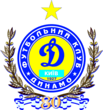
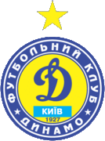
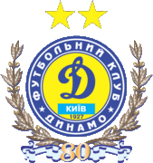

Динамо топ
З дитинства граю у футбол і вболіваю за Динамо. Просто найкращий клуб, який випустив у світ багато топових гравців.Про клуб
«Дина́мо» — український футбольний клуб з міста Києва, що бере участь в українській Прем'єр-лізі. «Динамо» засновано 1927 року, це найстарший та найпопулярніший на сьогодні професійний клуб міста. Єдиний клуб, який провів усі сезони у найвищій лізі СРСР, а потім України.
ДИНАМО Київ - 95! Історія за 95 секундГерб
Всесоюзне товариство «Динамо» виникло в 1923 році. У той же рік свій перший матч провела футбольна команда московського «Динамо». Потрібно було створити клубну емблему та форму. Керівництво ГПУ віддало відповідний наказ. Справу передоручили відомому в Москві спортсменові й художнику Олександру Борисову. Саме він придумав букву «Д» в ромбі. Автор пропонував помістити всередину емблеми також фігуру футболіста, що рветься до м'яча. Однак такий варіант начальство відкинуло. Пізніше вийшов відомчий наказ: «Літера „Д“ повинна вписуватися в ромб під строго певним кутом, з дотриманням техніки письма, запропонованої автором». Коли клуб «Динамо» з'явився в Києві, його емблемою став точно такий же ромб з літерою, а кольорами — білий і синій. У 1939 році, з нагоди 15-річчя товариства, «Динамо» було нагороджене орденом Леніна. Через це відбулися незначні зміни в емблемі товариства — у верхньому куті ромба з'явилася червона зірочка, яка і мала символізувати нагороду. Проте це не змінило форму — на футболках динамівців була лише або літера «Д», або вона ж у ромбі, але без зірочки.
  Досягнення
-
Європа
- Володар (2): 1975, 1986
-
Суперкубок УЄФА
- Володар (1): 1975
- Фіналіст (1): 1986
-
Ліга чемпіонів УЄФА
- Півфіналіст (3): 1977, 1987, 1999
- Чвертьфіналіст (6): 1973, 1976, 1982, 1983, 1992, 1998
-
Ліга Європи
- Півфіналіст (1): 2009
Склад команди
- Георгій Бущан
- Олександр Тимчик
- Денис Попов
- Олександр Сирота
- Владислав Дубінчак
- Сергій Сидорчук
- Микола Шапаренко
- Віталій Буяльський
- Назар Волошин
- Олександр Караваєв
- Владислав Ванат